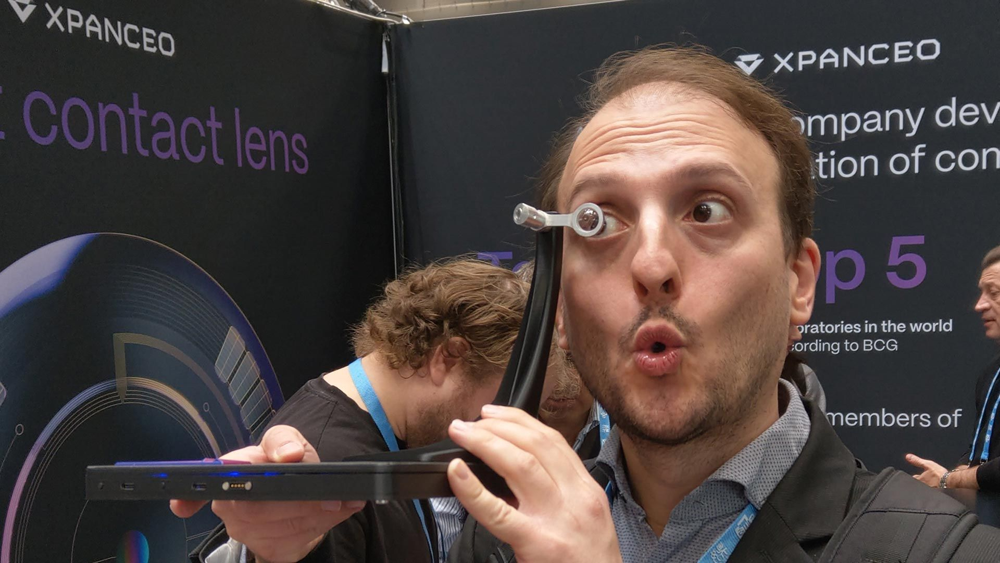

בעיצומה של מלחמה עקובה מדם בין רוסיה לאוקראינה, יזם רוסי ומדען אוקראיני חברו יחד כדי להקים את Xpanceo - סטארטאפ שפועל מדובאי ומפתח
פורסם במקור ב LinkedIn
בעיצומה של מלחמה עקובה מדם בין רוסיה לאוקראינה, יזם רוסי ומדען אוקראיני חברו יחד כדי להקים את Xpanceo - סטארטאפ שפועל מדובאי ומפתח עדשות מגע חכמות, שמציעות זום אופטי, ראיית לילה, ניטור בריאותי ותצוגת מציאות רבודה - ישירות מתוך גלגל העין.
החברה כבר גייסה 250 מיליון דולר ממשקיעים בהונג קונג, הוערכה ב־1.35 מיליארד דולר, ומכוונת לניסויים קליניים רק בסוף 2026.
היעד: להחליף את הסמארטפון, השעון החכם והמסך - בעדשה דקיקה ובלתי נראית.
Xpanceo הציגה לאחרונה ארבעה אבות־טיפוס: עדשה עם תצוגת XR, עדשה לניטור מדדים ביולוגיים, עדשה עם ראיית לילה, ועדשה אופטית עם תקריב.
אבל ההישג העמוק אינו ביכולות עצמן - אלא באופן שבו הן משתלבות בגוף.
האתגר המרכזי כבר אינו טכנולוגי, אלא תודעתי:
- איך גורמים לאנשים לקבל בתוכם אובייקט שמצלם, מודד, פולט אור ומשדר מידע?
- איך מייצרים אמון כלפי חפץ שנמצא במקום האינטימי ביותר - האישון?
בין הרתיעה האנושית לבין הפיתוי הדיגיטלי, נפרש חזון חדש של ממשק אדם-מכונה: שיתוף פעולה חוצה גבולות פוליטיים, בין טכנולוגיות ננו־פוטוניות שפותחו באוקראינה לבין מערכות AI מעמק הסיליקון.
לא רק ביטול של מסכים - אלא פרשנות חדשה למושג "לראות".
האם נרצה שעינינו יידעו יותר ממה שאנחנו מוכנים לדעת?
האם נרגיש שייכים יותר לעולם - או דווקא מרוחקים ממנו?
Xpanceo לא עונה על השאלות האלה, היא רק מתקרבת אליהן - מילימטר אחר מילימטר, עד לקצה שדה הראייה.
כשמתעסקים בקדמת הטכנולוגיה, היריבות הפוליטית נשכחת אי שם מאחור.
מאחל גם אצלנו באזור שנזכה לחיות ביותר שיתופי פעולה כאלה.
